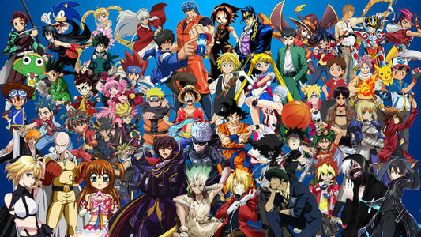

Anime
- Anime is eigenlijk een geanimeerde versie van Manga die al rond het jaar 1900 is ontstaan. Anime staat namelijk voor animated emotions m.a.w. film en animatie.
De Japanse tekenstijl kwam geheel to leven in de Anime cartoons die vaak in de bioscoop werden gedraaid, eigenlijk gewoon de tekenfilms

Link naar Mijn persoonlijke Web
Link naar Hobbies
<<< © Daryi >>>